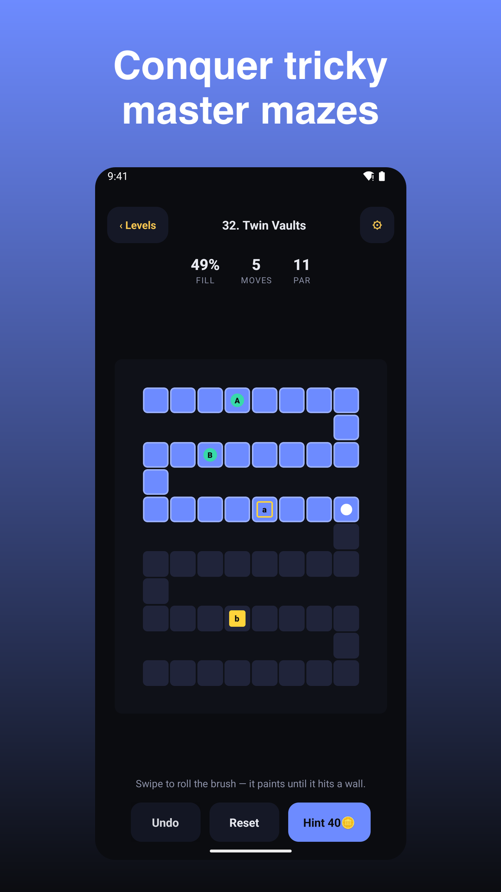

Path Painter - paint puzzle
Relaxing paint puzzle with maze painting logic and quick swipe play.



Paint puzzle fans, meet Path Painter—a soothing swipe-to-paint challenge with smart gate logic and quick, satisfying levels. Glide your finger to coat every tile, unlock color-coded doors in sequence, and outthink switches, one-way paths, and crumble floors.
How it plays
Plan your route, then swipe to leave a smooth, grid-snapped trail of paint. Fill required colors to trigger gates, tap switches to re-route, and keep your flow alive. Short stages make it perfect for a 1–3 minute break while still delivering meaningful strategy.
What makes it special
• Satisfying swipe feel: crisp haptics, soft brush sounds, and luscious paint trails
• Gate sequencing: unlock doors in the right order for elegant solutions
• Accessible by design: high-contrast mode, colorblind palettes, and pattern overlays
• Optional pressure: chill zen play or tackle gentle timers for extra stars
• Offline-friendly: play anywhere, no connection required
Features you’ll enjoy
• 100+ handcrafted stages at launch, with more in updates
• Clear difficulty curve: learn basics, then master switches, bridges, one-way tiles, and crumble floors
• Intuitive touch controls: swipe to paint, tap to toggle, hold to preview turns
• Helpful tools: free 1-step undo, resets anytime, optional hints when you’re stuck
• Daily Puzzle: a fresh handcrafted challenge to keep your streak going
• Earn and spend coins for hints, extra undos, and cozy cosmetics (brush skins, trails, backgrounds)
• Fair ads and light IAP: remove ads option and cosmetic bundles—no pay-to-win
Progression and goals
Collect stars by finishing levels efficiently—based on time, moves, and bonus tiles—and unlock new chapters on the world map. Hit milestones to earn boosters like Slow Time or Ghost Path previews. Cosmetic rewards let you personalize your brush and trail without affecting gameplay.
Accessibility and polish
Every puzzle remains readable without relying on color alone thanks to pattern overlays on paint, gates, and sources. Haptic ticks and soft audio cues reinforce each move, while ambient music keeps the mood calm and focused.
ASO notes you care about
If you love maze painting challenges, this swipe paint puzzle blends relaxing flow with thoughtful planning. Prefer a color fill game you can enjoy offline? Path Painter is built for bite-sized sessions with depth that grows as you learn. Fans of color fill games will appreciate clean visuals, quick stages, and satisfying completion splashes.
Play now
Unwind with a clean, cozy paint puzzle that respects your time and rewards your smarts. Swipe, sequence, and solve—your next perfect path is one move away.
Support: jeets98e@gmail.com